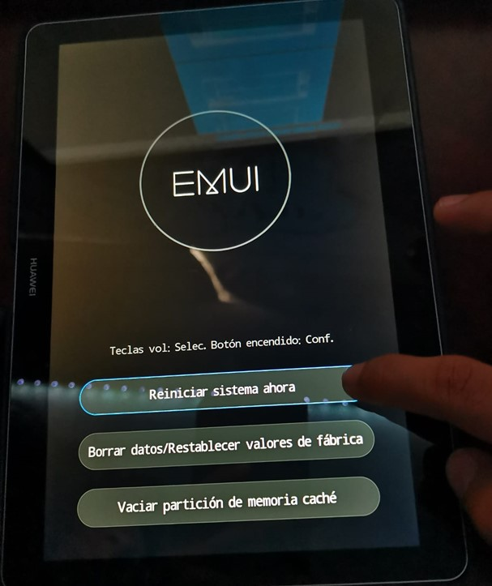

Reset 1
Para iniciar con el proceso del Hard Reset de la Tablet, teniendo estas opciones en la pantalla escogemos la opción de “Reiniciar”.
Para iniciar con el proceso del Hard Reset de la Tablet, teniendo estas opciones en la pantalla escogemos la opción de “Reiniciar”.
En este paso solo se espera unos minutos a que el dispositivo se reinicie.
Ahora que se prendió la pantalla, se puede visualizar que muestra tres botones donde se selecciona el segundo boton con el nombre: “Borrar datos/Restablecer valores de fabrica .

Despues se observa en la pantalla una instrucción en la que pide que ingrese la palabra “yes” y presionar el botón para confirmar el restablecimiento, se eliminaran los datos del dispositivo.
Despues sale este texto en la pantalla, de los dos botónes que estan escogemos el segundo botón para borrar los datos y restablecerlos.
. Despues del paso anterior empezara a borrarse los datos, en este paso solo queda esperar unos cuantos minutos a que llegue al 100%
Despues se muestra en la pantalla tres botones de los cuales selecionamos el primer botón “Reiniciar sistema ahora”.
9 .Se espera un momento mientras reinicia el dispositivo.
Como primer paso al tener el dispositivo en este caso un celular, lo prendemos y vamos a la pantalla principal.

Ahora buscamos la aplicación de “Ajustes” en nuestro dispositivo y la abrimos.

Despues de abrir “Ajustes”, buscamos el apartado llamado “Realizar copia de seguridad” y lo presionamos

. Luego de entrar en ese apartado, se nos da a observar varias opciones , pero en este caso iremos hasta el final”, en la opción de “Restablecer valores predeterminados”.
. Después le damos al botón de “Restablecer dispositivo”.

Oprimimos el botón de “Eliminar todo”.

Finalmente, se apaga el dispositivo y se hace el proceso de eliminar los datos.


Con esta actividad aprendimos que un "Hard Reset" es un procedimiento que restablece un dispositivo electrónico, como un teléfono o una tablet, a su configuración de fábrica. Este proceso elimina todos los datos y configuraciones personalizadas del dispositivo, devolviéndolo a un estado similar al que tenía cuando salió de la fábrica. Este se utiliza a menudo para solucionar problemas de rendimiento, eliminar configuraciones incorrectas o como último recurso para desbloquear un dispositivo cuando otras soluciones no han funcionado. De este existen múltiples maneras de realizarlo, pero todas llegan al mismo punto, los datos son eliminados y la única forma de poder recuperarlos es haber creado una copia de seguridad. Comprendimos que la tecnología móvil ha experimentado una transformación radical, evolucionando desde los primeros teléfonos celulares hasta una amplia gama de dispositivos. En el ámbito empresarial, la movilidad ha cambiado la forma en que se llevan a cabo las operaciones, permitiendo a las empresas adaptarse rápidamente, mejorar la eficiencia y ofrecer servicios más personalizados. En la educación, los dispositivos móviles han transformado la forma en que los estudiantes acceden a la información y aprenden, brindando oportunidades de aprendizaje más flexibles y personalizadas. Además, la tecnología móvil ha desempeñado un papel crucial en la democratización de la información, permitiendo que comunidades enteras accedan a recursos y servicios que anteriormente podrían haber estado fuera de su alcance.
Año Aproximado (1973-1983): Tecnología Destacada: Redes analógicas. Dispositivos con grandes tamaños y pesos. Limitada movilidad. Funciones básicas de llamadas.
Año Aproximado (1984-1999): Tecnología Destacada: Introducción de redes digitales. Mejora en portabilidad y duración de la batería. Adopción de mensajes de texto (SMS). Mejora en la calidad de las llamadas.
Año Aproximado (2000-2010): Tecnología Destacada: Implementación de velocidades de datos más rápidas. Navegación por Internet móvil. Introducción de video llamadas. Mejoras en la capacidad de multimedia.
Año Aproximado (Desde 2010): Tecnología Destacada: Despliegue de conexiones de datos de alta velocidad. Streaming de video de alta calidad. Mayor eficiencia en la transmisión de datos. Desarrollo de aplicaciones más avanzadas.
Año Aproximado (Desde 2019): Tecnología Destacada: Implementación de velocidades de datos ultrarrápidas. Latencia muy baja. Mayor capacidad de conexión simultánea. Soporte para Internet de las cosas (IoT) a gran escala. Avances en la realidad virtual y aumentada.

Pantallas: Procesadores: Aumento significativo en la velocidad y capacidad de procesamiento. Almacenamiento: Incremento en la capacidad de almacenamiento interno. Cámaras: Mejora constante en la calidad de las cámaras, desde cámaras básicas hasta sistemas de cámaras múltiples con capacidades avanzadas. Desde pantallas monocromáticas hasta pantallas táctiles a color de alta resolución.
Las redes móviles han cambiado mucho desde sus inicios. Cada generación ha traído mejoras en la velocidad, la capacidad y la calidad de las comunicaciones. Veamos cómo han evolucionado las redes móviles en cuatro aspectos: el procesamiento, la funcionalidad, la pantalla y el diseño. El procesamiento se refiere a la rapidez y la eficiencia con que se transmiten los datos. Las primeras redes móviles eran analógicas y solo permitían llamadas de voz. Con la llegada de las redes 2G, se pasó al formato digital y se añadió el servicio de mensajes de texto (SMS). Las redes 3G aumentaron la velocidad de los datos y permitieron el acceso a Internet móvil y las video llamadas. Las redes 4G ofrecieron conexiones de alta velocidad y mayor rendimiento para los datos multimedia. Las redes 5G prometen velocidades ultrarrápidas y una gran capacidad para manejar muchos datos al mismo tiempo. La funcionalidad se refiere a las posibilidades y los servicios que ofrecen las redes móviles. Con cada generación, se han desarrollado aplicaciones más avanzadas y variadas. Las redes 2G mejoraron la calidad de voz y permitieron enviar mensajes de texto. Las redes 3G facilitaron la navegación por Internet móvil y el uso de aplicaciones multimedia. Las redes 4G permitieron el streaming de video de alta calidad y el uso de servicios basados en la nube. Las redes 5G abren la puerta a la Internet de las cosas (IoT), la realidad virtual y aumentada, y la inteligencia artificial. La pantalla se refiere al aspecto y la resolución de la pantalla de los dispositivos móviles. Con cada generación, se han mejorado las pantallas para ofrecer una experiencia más atractiva y cómoda a los usuarios. Las primeras pantallas eran pequeñas y monocromáticas. Con las redes 3G, se introdujeron las pantallas a color y de mayor resolución. Con las redes 4G, se popularizaron las pantallas táctiles y de alta resolución. Con las redes 5G, se esperan pantallas con tasas de refresco más altas y flexibles. El diseño se refiere a la forma y el tamaño de los dispositivos móviles. Con cada generación, se han buscado diseños más delgados, ligeros y estéticos. Los primeros dispositivos eran grandes y pesados. Con las redes 2G, se redujo el tamaño y el peso de los dispositivos. Con las redes 3G, se diversificó el diseño de los dispositivos con diferentes formas y colores. Con las redes 4G, se afinó el diseño de los dispositivos con diseños más elegantes y delgados. Con las redes 5G, se esperan diseños más innovadores y flexibles.
La constante evolución de los dispositivos móviles ha dejado una profunda huella en la sociedad, transformando la manera en que interactuamos con el entorno digital y redefiniendo nuestros métodos de comunicación, trabajo y entretenimiento desde las primeras generaciones hasta la actualidad. Este progreso ha sido marcado por avances notables en las capacidades de procesamiento, conectividad, funcionalidades y diseño. Implicaciones de la Evolución: Conectividad Ubicua: La evolución de las redes móviles ha propiciado una conectividad ubicua, permitiendo acceso instantáneo a información y servicios en cualquier momento y lugar. Desarrollo de Aplicaciones Avanzadas: El aumento en la capacidad de procesamiento ha catalizado el desarrollo de aplicaciones más sofisticadas, abarcando desde herramientas de productividad hasta experiencias inmersivas de realidad aumentada. Transformación en la Experiencia del Usuario: Las mejoras en pantallas y diseño han contribuido a una experiencia del usuario más inmersiva y atractiva, enriqueciendo la interacción con los dispositivos móviles. Innovaciones en Salud y Educación: Los dispositivos móviles han facilitado el acceso a servicios de salud y educación, desempeñando un papel crucial, especialmente en regiones con recursos limitados. Futuras Perspectivas y Desarrollo: 5G y Más Allá: La implementación plena de redes 5G y el avance hacia tecnologías sucesoras prometen velocidades y capacidades aún mayores, dando origen a nuevas aplicaciones y servicios. Integración de Tecnologías Emergentes: La convergencia de tecnologías como inteligencia artificial, Internet de las cosas (IoT) y realidad extendida (XR) transformará de manera fundamental la funcionalidad de los dispositivos móviles.